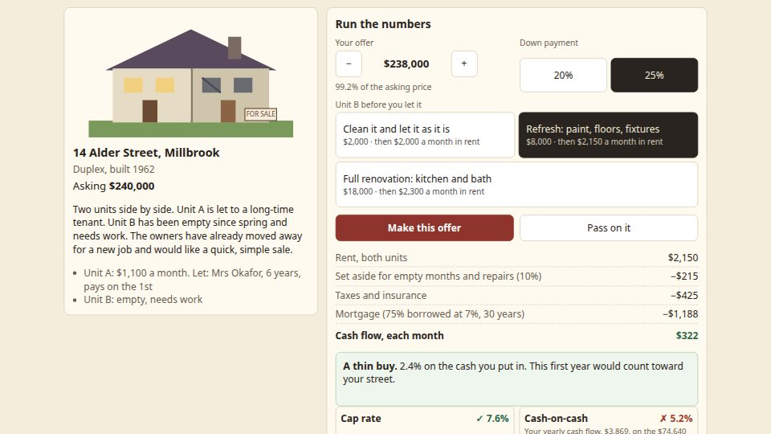

Where to open it
Keymaster is in the Lab, under Build and manage, and at games/keymaster/. It is mouse or tap only. The plus and minus buttons move your offer in steps of $2,000, from $60,000 under the asking price to $20,000 over it.

A row of five doors shows For sale, Coming up, Pays you, Costly, or Sold. Your cash sits with a line about how many paying homes you still need. If those three become impossible, End the street and Walk Alder Street again are both there.
Three choices, then the line above the buttons
On every home you set three things, and the worksheet updates as you do.
- Your offer. The label shows the price and what share of the asking price that is.
- Your down payment. 20% or 25%. The rest is a loan at 7% over 30 years. Closing costs are part of the cash you put in on day one. The worksheet names them.
- The plan for the work. Each home has its own three plans, from leaving it nearly as it is, through a refresh, to a full renovation. The cost and the rent of each plan stay visible. A dearer plan lets for more.
Make this offer and Pass on it sit above a month of the deal. Under that table, still on the same sheet, a line names the year in plain words: a great buy, a solid buy, a thin buy, or a costly buy. Then it says whether this first year would count toward your street. Read it before you spend. A thin buy or better counts. A costly buy does not. If the sellers would not take this price, the line says the year counts only if they take the offer.
If the cash will not cover the offer, Make this offer stays shut and the line under it says “Not enough cash for this offer.” That line does not push the buttons. The note above it tells you whether a lower offer, 20% down, or less work would fit.
What the sellers do
Each home has its own sellers. At or above the price they will take, they say yes. From their floor up to that price, they counter, and the screen shows their price. You can still change the down payment and the work. The buttons are Take, with their price, and Walk away. Below the floor, they refuse. A higher offer is never a worse answer than a lower one.
Two refusals and they stop answering. The screen says they sell to another buyer. Pass on it, and you see how the next buyer did: they paid the sellers’ price and did the full renovation. Passing spends no cash. The home is gone for this walk.
Buy, and you see that home’s first year, month by month, then a verdict. Growth is shown apart, because nobody promises it. A buy that would make three paying homes impossible does not read as a great buy. The line says this ends the street.
The four measures on the sheet
These are the lines on the worksheet, in the game’s own words.
| Line | What the sheet says it is |
|---|---|
| Cap rate | What it earns a year before the loan, on the price. Rentals nearby sell at 7.5%. |
| Cash-on-cash | Your yearly cash flow on the cash you put in: down payment, closing costs, and the work. |
| The 1% rule | A quick screen: monthly rent at least 1% of the price. It is only a screen. A home can pass it and still not pay you. |
| After-repair value | What it is worth once let, from its net income, and whether you are under water on day one. |
The rent line is both units, or all the flats, once the work is let. A set-aside comes off for empty months and repairs, then taxes and insurance, then the mortgage. What is left is the monthly cash flow.
The five doors
The first walk meets them in this order. Walk Alder Street again deals the same five homes in a new order. Your cash starts at $200,000 again.
- 14 Alder Street. A 1962 duplex. Unit A is let to Mrs Okafor. Unit B has been empty since spring. The owners have moved away and want a quick sale.
- 3 Alder Street. A single-family home, built 1998 and renovated. New kitchen, fresh paint, a lawn someone loves. The owners are in no hurry.
- 22 Alder Street. A 1931 triplex. Three flats, worn kitchens, and a roof that leaks. The owner is retiring and wants it gone before winter.
- 9 Alder Street. A 1955 corner house. Strong rent for the price. The corner lot is assessed high, and the taxes went up again this spring.
- 31 Alder Street. A 1940 cottage at the quiet end. Two bedrooms, small and plain. The last tenant stayed nine years.
Which two never pay, if you want it before the sheet tells you
3 Alder Street and 9 Alder Street do not pay you in the first year at any offer the sellers will take. The sheet says so on those doors: “No offer the sellers will take pays you in its first year.” 14, 22 and 31 can count, if the price, the down payment and the work leave you a thin buy or better and you still have the cash. A careful offer can still win the street. The win lists the homes, the offers, and the cash left, once, with Walk Alder Street again. One home still needed says “1 home that pays.”
Coming back
Homes you bought or passed, and your cash, stay on this device. The listing you were looking at starts fresh when you come back: the offer, the down payment and the work go back to the asking price, 25% down, and the middle plan. A save with no home order is left untouched, and the screen starts a new street. There is no older file to carry forward.
Still being built
A further pass is in progress and is not in the Keymaster you can open today. It is meant to vary the listings, balance play on a phone, and pace the first session. The five homes, the $2,000 steps, the sellers, and the line that says whether the year counts are already in the game. Do not expect a sixth home, a new street, or a different win until that pass is in the Lab.